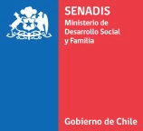
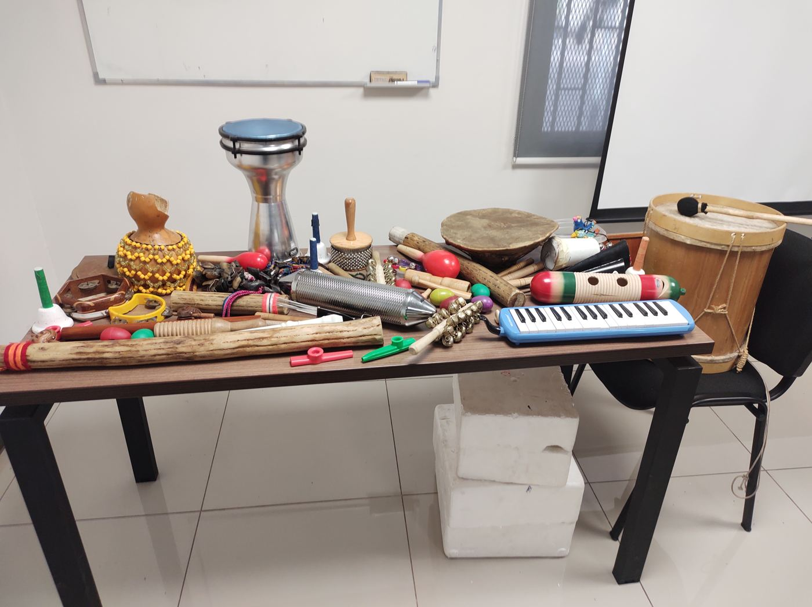
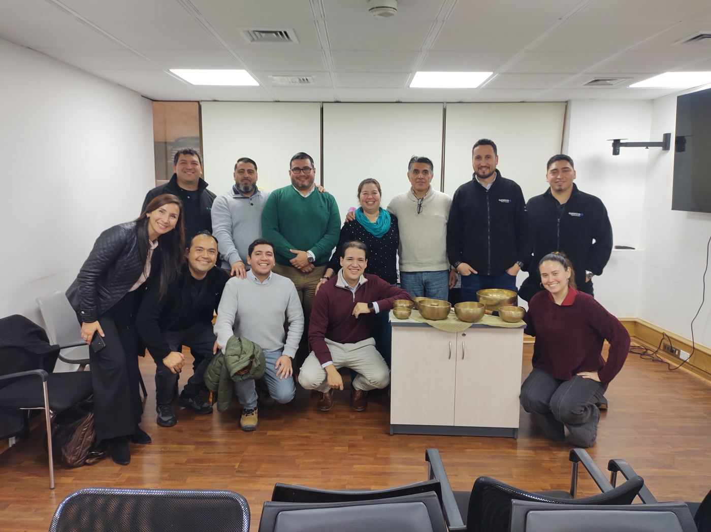
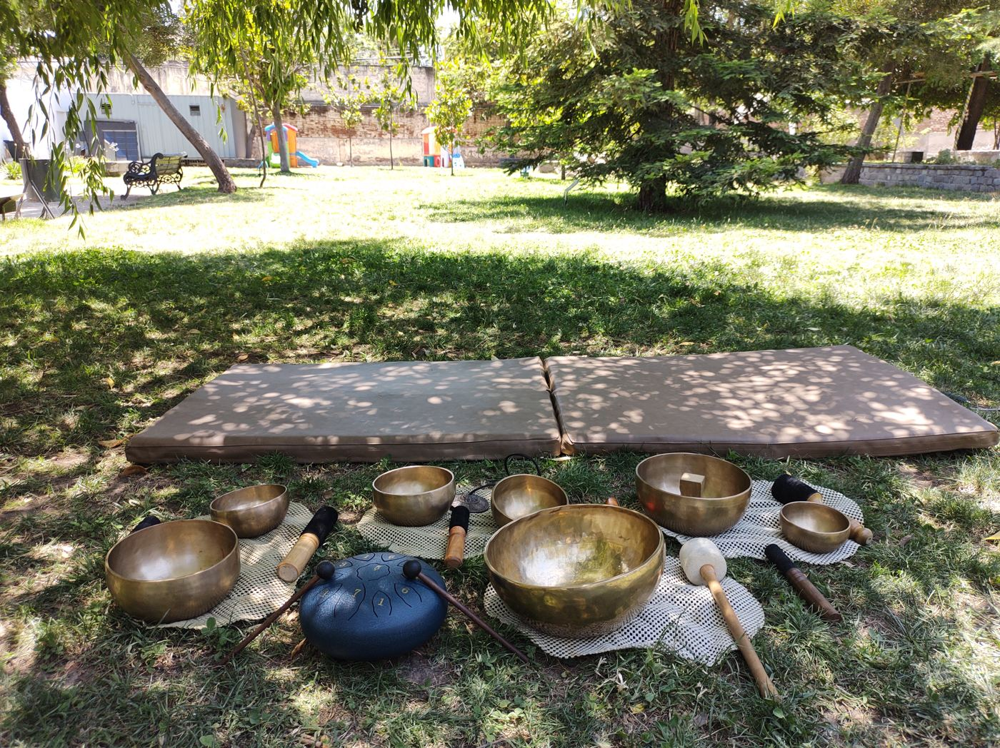
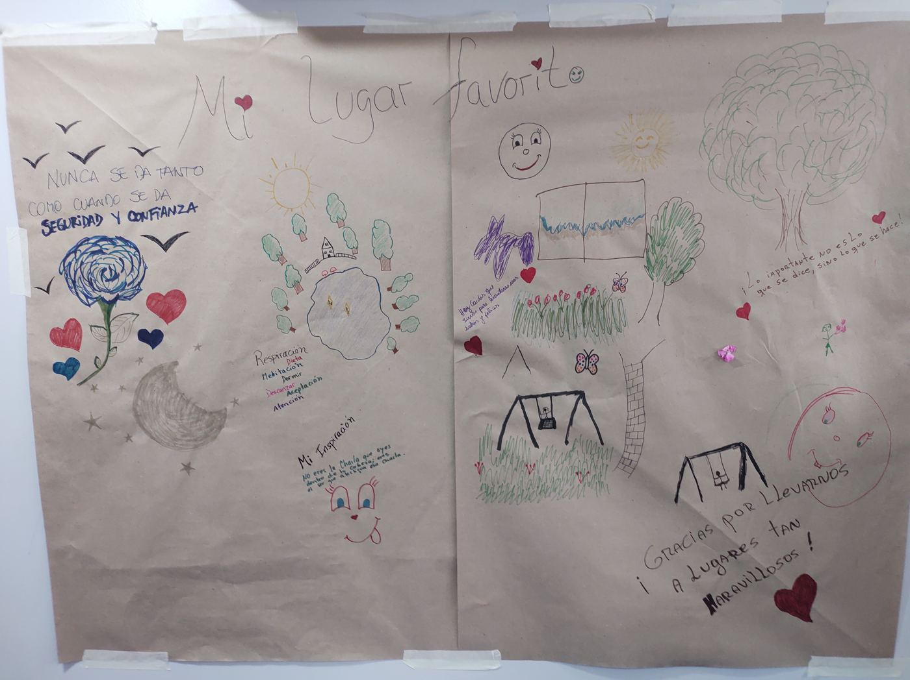
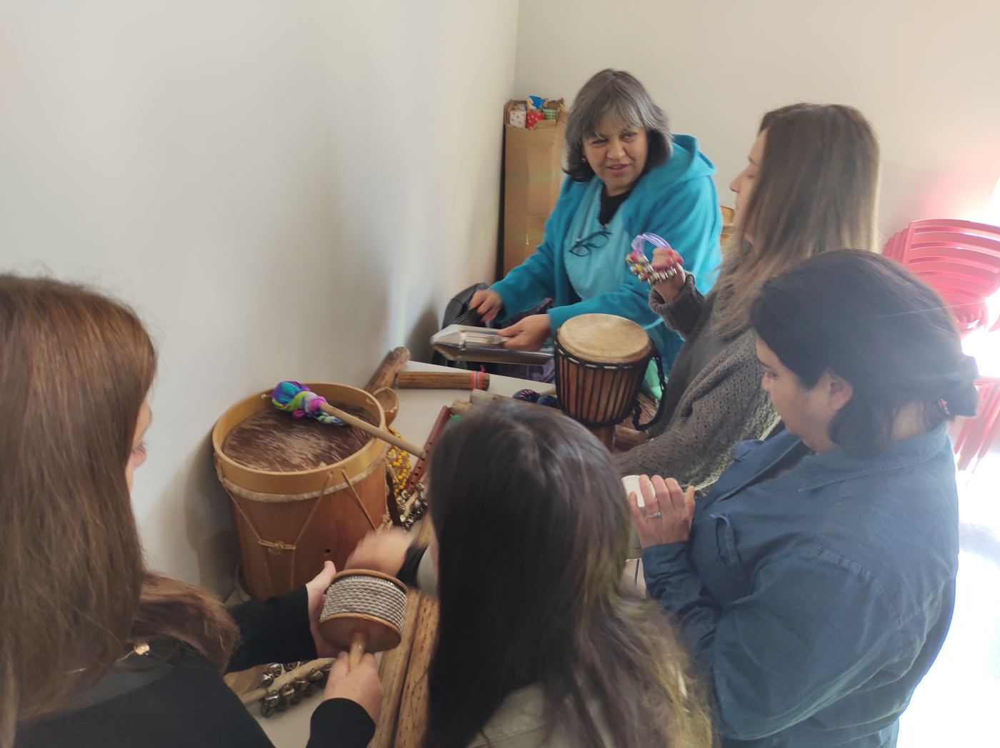
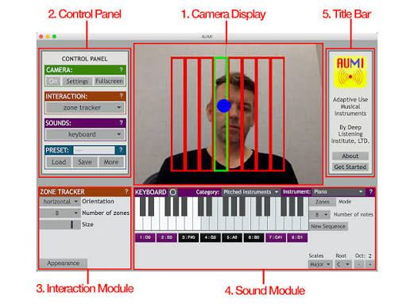
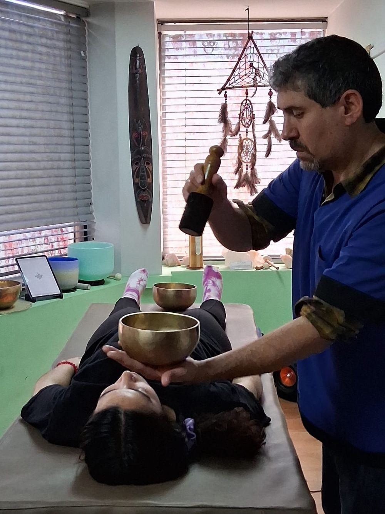
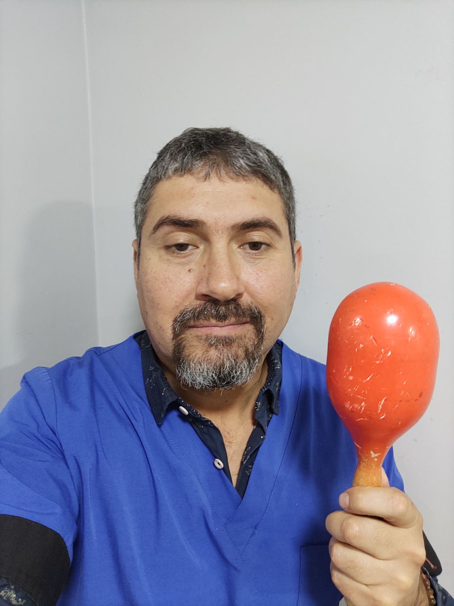

Propuesta de curso e-learning · 2027
Arte, sonido y música para la inclusión
Herramientas artísticas y sonoro-musicales para el trabajo con estudiantes con discapacidad. Un curso práctico para que profesionales de la educación de todo Chile lleven al aula la arteterapia, la música, la vibración y la tecnología musical accesible.

Cinco caminos para expresarse, comunicarse y aprender
El curso reúne cinco miradas que rara vez se enseñan juntas, y las convierte en actividades concretas para la sala de clases.
Arteterapia
Pintura, modelado, collage y cuerpo para expresar lo que no se dice con palabras.
Didáctica musical
Enseñar música con Dalcroze, Murray Schafer y Música en Colores.
Musicoterapia y vibración
Canción, improvisación, voz, juego y vibroacústica para comunicar y regular.
Tecnología AUMI
Software gratuito que convierte un gesto captado por la cámara en música.
Neurociencia
Por qué la música transforma el cerebro y cómo aplicarlo con responsabilidad.
Para muchos estudiantes, el arte y la música son su principal forma de comunicarse
Docentes, educadoras diferenciales, fonoaudiólogos, terapeutas ocupacionales, psicólogos y asistentes de la educación valoran la música y el arte, pero suelen tener pocas herramientas para adaptarlos y aplicarlos con intención.
Este curso cierra esa brecha desde un enfoque de derechos, centrado en la persona y en sus capacidades, y alineado con la diversificación de la enseñanza y el Diseño Universal para el Aprendizaje (DUA).
Lo importante no es el resultado artístico, sino el proceso: un espacio sin juicios donde cada estudiante encuentra su propia voz.

6 módulos, 6 horas cada uno
Cada módulo parte con una vivencia en primera persona, sigue con los fundamentos y termina con una práctica para aplicar en el propio establecimiento. Toca cada módulo para ver sus contenidos.

Módulo 1Escuchar para incluir
Sonido, cuerpo y derechos
Escuchar para incluir
- Enfoque de derechos y modelo social de la discapacidad; uso correcto del lenguaje según las recomendaciones de SENADIS.
- El arte y la música como derecho cultural y como medio de expresión y comunicación en la escuela.
- Murray Schafer: apertura al mundo sonoro, conciencia auditiva y paisajes sonoros.
- Parámetros del sonido (altura, timbre, duración, intensidad) y su relación con la regulación y el bienestar.
- Observar antes de intervenir: la evaluación centrada en el estudiante del enfoque Jan Van Dijk.
Práctica aplicada
Grabar el paisaje sonoro de la sala de clases y analizar cómo influye en los estudiantes.
Recurso
Banco de paisajes sonoros y pauta de observación.

Módulo 2Arteterapia en la escuela
Expresarse más allá de las palabras
Arteterapia en la escuela
- Qué es la arteterapia: el proceso creativo como camino para expresar emociones y pensamientos; el valor del proceso sobre el resultado.
- Beneficios: comunicación no verbal, desarrollo de la motricidad, reducción de la ansiedad y el estrés, autoestima.
- Técnicas: dibujo y pintura, modelado con arcilla, collage, psicoplástica (Verónica Barraza), mural colectivo, dibujo con música y cuento sonoro.
- Adaptaciones según discapacidad: espectro autista (creación compartida para lo social), discapacidad física (adaptadores, pintar con pies o boca), visual (texturas, tacto, sonido y olfato), auditiva (expresión sin lenguaje oral), intelectual y múltiple.
- Encuadre y cuidado: qué puede hacer un docente y cuándo derivar.
Práctica aplicada
Aplicar una técnica plástica con música en el curso y registrar el proceso.
Recurso
Fichas de técnicas de arteterapia con sus adaptaciones.
Módulo 3Didáctica musical inclusiva
Cómo enseñar música a todos los estudiantes
Didáctica musical inclusiva
- Elementos de la música: pulso, ritmo, métrica, melodía y frase.
- Método Dalcroze: aprender música con el cuerpo y el movimiento.
- Música en Colores (Estela Cabezas): lectura musical por colores, accesible para estudiantes con discapacidad intelectual.
- El juego musical y las canciones como base de la clase.
- Construcción de instrumentos con materiales reciclados y planificación con DUA.
Práctica aplicada
Enseñar una canción breve con Música en Colores y movimiento Dalcroze.
Recurso
Cancionero y plantillas de Música en Colores para imprimir.

Módulo 4Recursos desde la musicoterapia y la vibroacústica
La música como puente de comunicación
Recursos desde la musicoterapia y la vibroacústica
- Diferencias entre educación musical, actividad musical y musicoterapia.
- Musicoterapia Creativa Nordoff-Robbins: la improvisación para encontrarse con el estudiante.
- La canción, la voz y el canto para la comunicación y la memoria; el juego y las rutinas sonoras de anticipación.
- El sonido que se siente: vibración y percepción táctil para estudiantes sordos o con hipoacusia.
- Vibroacústica: sonidos de baja frecuencia que se perciben en el cuerpo, el mat vibroacústico y su uso para la regulación sensorial.
- Estudio de casos, entre ellos "Escuchar con el cuerpo": educación musical y musicoterapia con un joven con hipoacusia profunda y discapacidad múltiple (ponencia del relator, Universidad Alberto Hurtado, 2026).
Práctica aplicada
Diseñar una rutina sonora de bienvenida y despedida para un estudiante o curso.
Recurso
Repertorio de canciones de rutina y guía de experiencias vibrotáctiles con materiales simples.

Módulo 5Tecnología musical accesible: AUMI
Hacer música con un gesto
Tecnología musical accesible: AUMI
- Qué es AUMI (Adaptive Use Musical Instruments), del Deep Listening Institute: software para computador (Mac y Windows) y app gratuita para iPhone y iPad.
- Descarga, instalación y configuración paso a paso: cámara, seguimiento del movimiento, zonas, sonidos y escalas.
- Actividades: causa y efecto, turnos, improvisación grupal, acompañar canciones.
- La experiencia de Musicoterapia y Tecnología Musical en la Escuela Especial Jan Van Dijk (Corpaliv).
- Otras tecnologías: Soundbeam, EyeHarp, switches y aplicaciones de vibración y visualización del sonido.
Práctica aplicada
Instalar AUMI, configurarlo para un estudiante y grabar un minuto de uso.
Recurso
Guía de AUMI en español, paso a paso.
Módulo 6Música y neurociencia + proyecto final
Técnicas basadas en Musicoterapia Neurológica
Música y neurociencia + proyecto final
- Música y cerebro: percepción, emoción, memoria y movimiento; plasticidad y entrenamiento musical.
- Desarrollo musical y su relación con las áreas motriz, cognitiva, afectiva y social.
- Musicoterapia Neurológica (Michael Thaut): qué es y cuáles son sus técnicas.
- Actividades para el aula basadas en esas técnicas: ritmo para el movimiento, instrumentos para la motricidad, canto para la memoria y el lenguaje, música para la atención y las funciones ejecutivas.
- Límites del rol docente y trabajo con especialistas.
- Planificación y evaluación de la experiencia artístico-musical; el "diagnóstico sonoro".
Proyecto final
Planificar y aplicar una experiencia artístico-musical adaptada, con un video breve y una reflexión.
Recurso
Planificador de experiencias con DUA.
AUMI: cuando el cuerpo no alcanza el instrumento, el instrumento va hacia el cuerpo
Con una cámara y un software gratuito, un pequeño movimiento de la cabeza, la mano o los ojos se transforma en música. Para estudiantes con movilidad reducida y sin lenguaje oral, puede ser una de sus pocas vías de expresión.
Descargar AUMI gratis en aumiapp.com o en la App Store.
Configurar la cámara y elegir qué parte del cuerpo se sigue.
Elegir sonidos, escalas y zonas según cada estudiante.
Jugar: causa y efecto, turnos e improvisación grupal.

El sonido que se siente en el cuerpo
La música no solo se escucha: también se siente. Los sonidos de baja frecuencia viajan por el cuerpo como vibración, una puerta de entrada para estudiantes sordos o con hipoacusia y para quienes necesitan apoyo en su regulación sensorial.
Los participantes conocerán la vibroacústica y el mat vibroacústico, y aprenderán experiencias vibrotáctiles posibles en cualquier escuela, con parlantes, superficies, instrumentos de percusión y cuencos.
Cada participante avanza a su ritmo, desde cualquier lugar de Chile
El curso está pensado para docentes con poco tiempo: piezas cortas, claras y aplicables, accesibles desde el computador o el celular.
Cápsulas de video
Videos breves, subtitulados, grabados en un setting real con instrumentos y materiales.
Actividades interactivas
Ejercicios accesibles en el aula virtual, del mismo tipo que los del curso UMCE–SENADIS.
Práctica en el aula
Cada módulo termina con algo que se prueba con los propios estudiantes.
| Por módulo | Cápsulas | Lectura ilustrada | Actividad interactiva | Práctica aplicada | Foro | Total |
|---|---|---|---|---|---|---|
| Cada uno de los 6 módulos | 1,5 h | 1 h | 1 h | 1,5 h | 1 h | 6 h |
| Curso completo | 9 h | 6 h | 6 h | 9 h | 6 h | 36 h |
Kit de recursos descargable
Evaluación
Accesibilidad: videos con subtítulos, PDF accesibles y actividades navegables con teclado.

Reinaldo Farías Serey
Relator líder y diseño instruccionalJunto al equipo docente del proyecto UMCE–SENADIS.
- Musicoterapeuta (Postítulo en Arte Terapias, mención Musicoterapia, Universidad de Chile) y profesor de Educación Musical (Universidad de Concepción).
- Magíster en Docencia Universitaria (Universidad SEK). Tramo Experto II del Sistema de Desarrollo Profesional Docente.
- Musicoterapeuta de personas con discapacidad, sus cuidadores y profesionales en Corpaliv (2013–2024), donde desarrolló el servicio de Musicoterapia y Tecnología Musical con AUMI y Soundbeam.
- Creador y docente de la asignatura "Didáctica artística y musical en discapacidad intelectual" (Pedagogía en Educación Diferencial, Universidad SEK), base de este curso.
- Ponencia "Escuchar con el cuerpo: educación musical y musicoterapia con comunicación aumentativa y tecnología asistiva en un joven con hipoacusia profunda y discapacidad múltiple", en el VIII Congreso Chileno de Investigación en Educación Musical (Instituto de Música, Universidad Alberto Hurtado, 2026).
- Expositor en el XIII Congreso Iberoamericano de Inclusión Educativa con Tecnologías Emergentes (2019) y fundador de Sonofrecuencia.
Un curso para que la inclusión también suene
Propuesta de la Universidad Metropolitana de Ciencias de la Educación para la Academia SENADIS.